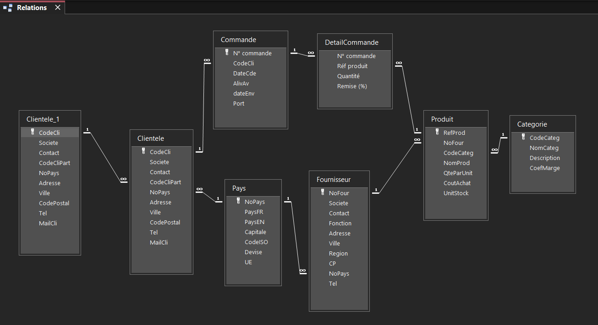

Présentation de la base de données
Les tables et les relations de la base KDou.
Sujet de la SAE sur laquelle nous avons travaillé :
SAE2026La base de données KDou
Pour cette SAE, nous avons travaillé sur une base de données fournie au format Access (.accdb). Elle contient des informations sur les clients, les produits, les fournisseurs et les commandes de l'entreprise KDou.

Le schéma des relations
La base contient plusieurs tables reliées entre elles grâce à des clés primaires et étrangères. Ces relations permettent de retrouver les informations de plusieurs tables dans une même requête SQL.

Les différentes tables
On retrouve principalement les tables Clientele, Commande, DetailCommande, Produit, Categorie, Fournisseur et Pays.
Par exemple, un client peut passer plusieurs commandes et une commande peut contenir plusieurs produits.